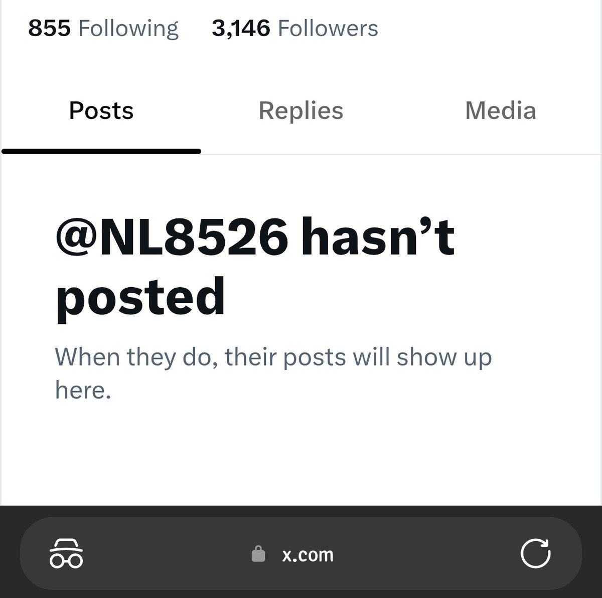
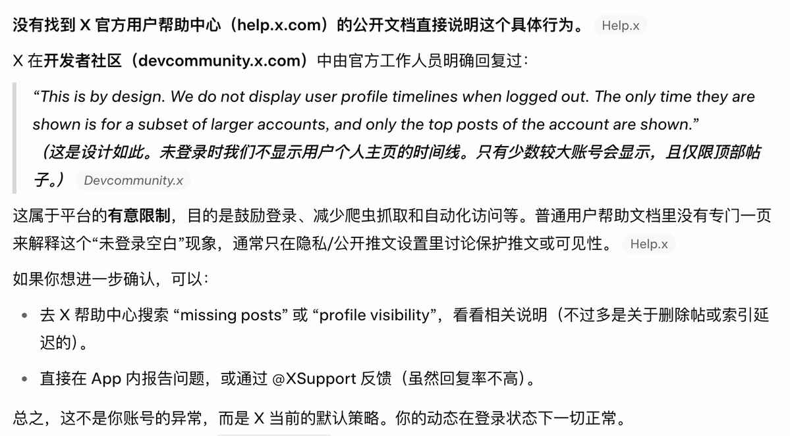

柠凉🍥🏳️⚧️
@NL8526
😭😭@grok 这是真的吗 我就说我是小v吧


搬砖的小明
@xiaoming_io
意外发现一个很有意思的东西，怎么判断一个X账号是不是大V。
用隐私模式打开这个账号主页。如果显示的是 hasn't posted，说明这个号比较小，内容不会被显示。如果能显示一些动态，说明是真的大V。
我一开始还以为是自己的号有什么问题，结果问了一下Grok，原来是平台有意这么设计的🤣 https://t.co/lLvGu0vXkw